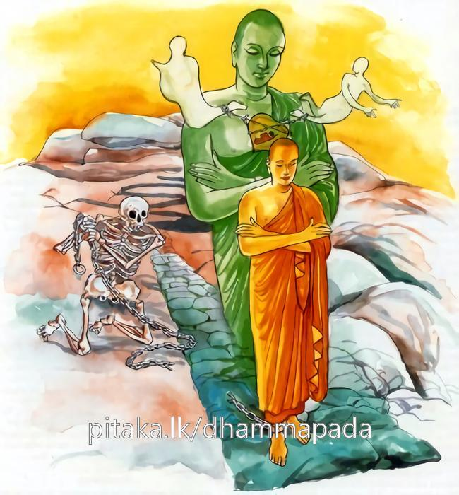

3-4 සිව්වන භාගිනෙය්ය සංඝරක්ඛිත තෙරුන්ගේ වස්තුවයි.
මෙම කතාව සද්ධර්ම සාගරයෙන් ද කියවන්න.
දූරඞ්ගමං එකචරං අසරීරං ගුහාසයං
යෙ චිත්තං සඤ්ඤමෙස්සන්ති මොක්ඛන්ති මාරබන්ධනා.
(යොදුන් දහසෙකින් දුර වූ ද අරමුණු ගන්නා බැවින්) දුරට යන්නා වූ ම, හුදෙකලා හැසිරෙන (එක් විට දෙසිතක් නො ඉපද එක් සිතක් ම උපදනා බැවින් එකක් ව ම හැසිරෙන), (අරූපී ධර්ම බැවින් පැහැ සටහන් නැත්නු යි) අශ්රිර වූ, (ශරීර නැමැති) ගුහායෙහි පවත්නා වූ සිත යම් කෙනෙක් සංවරයෙහි පිහිටුවද්ද, ඔහු මාරබන්ධනයෙන් (ත්රෛභූමක වෘත්තයෙන්) මිදෙන්නාහු ය.

දූරංගමං ආදි මේ ධර්මදේශනාව ශාස්තෘන්වහන්සේ සැවැත්නුවර වාසය කරන කාලයේ සංඝරක්ඛිත නම් භික්ෂුවක් අරභයා දෙසූසේක.
සැවැත්නුවර එක් කුලපුත්රයෙක් බුදුරදුන්ගෙන් බණ අසා ගිහිගෙන් නික්මී පැවිදිව උපසම්පදාවද ලබා සංඝරක්ඛිත නමින් ප්රකට විය. කිහිප දිනකින්ම රහත්බවට ද පැමිණියේය. ඔහුගේ බාලසොහොයුරා පුතකු ලැබ ඔහුට තෙරුන්ගේ නමම තැබීය. ඔහු භාගිනෙය්යසංඝරක්ඛිත නමින් සුදුසු වියට පැමිණ තෙරුන් සමීපයේම පැවිදිව උපසම්පදාවද ලබා එක් ගැමි අරමක වස්වැස සත්රියන් රෙදිකඩක් හා අටරියන් රෙදිකඩක් වස්සාවාසික සාටක වශයෙන් ලැබීය.
මෙයින් අටරියන්සාටකය මගේ උපාධ්යායයන්වහන්සේට දෙන්නෙමි. හත්රියන්සාටකය මම ගන්නෙමියි සිතා වස්පවාරණයෙන් පසු පිඬුසිඟමින් උපාධ්යායයන් වහන්සේ පිඬුසිඟා විහාරයට පැමිණීමට පෙර විහාරයට ගොස් උපාධ්යායතෙරුන් දවල් වසන තැන් හැමදපියා පාදොවන පැන් තබා අසුන් පිළියෙල කොට තෙරුන් එන මග බලබලා සිටියේය. උන්වහන්සේ වඩින බව දැක පෙරගමන් කොට පාසිවුරු පිළිගෙන ස්වාමීනි, වැඩ හිඳින්නැයි තෙරුන් වඩා හිඳුවා විජිනිපත (තල් අත්ත) ගෙන පවන් සලා පැන් දී පා දොවා තමන් ගෙනා සාටකය රැගෙන පාමුල තබා ස්වාමීනි, මෙය ඔබවහන්සේගේ ප්රයෝජනයට ගනු මැනවැයි පවන් සලමින් සිටියේය.
ඉන්පසු උපාධ්යාය තෙරණුවෝ, සංඝරක්ඛිත, මට සිවුරු සම්පූර්ණයි. ඔබම මේ සාටකය ප්රයෝජනයට ගන්නැයි කීහ. ස්වාමීනි, මෙය ලැබුණු කාලයේ පටන් ඔබ වහන්සේටම දෙන්නෙමියි මම සිතුවෙමි. එහෙයින් මෙය ප්රයෝජනයට ගනුමැනවැයි ඉල්ලා සිටියේය. සංඝරක්ඛිත එසේ සිතුවාට කමක් නැත. මගේ සිවුරු සම්පූර්ණ නිසා ඔබම මෙය ප්රයෝජනයට ගන්නැයි කීහ. ස්වාමීනි, එසේ නොකරන්න. ඔබ වහන්සේ මෙය පරිහරණය කරන විට මට මහත්ඵලයක් වන්නේය. මෙසේ නැවත නැවතත් ඉල්ලා සිටි නමුත් තෙරණුවෝ එය භාර නොගත්හ. සංඝරක්ඛිත හිමියෝ පවන් සලන ගමන්ම මෙසේ සිතූහ.
මම ගිහි කාලයෙහි මුන්වහන්සේගේ බෑණාය. පැවිදිවූ පසු සද්ධිවිහාරිකය. මෙසේ තිබියදීත් මා දෙන දෙය ප්රයෝජනයට නොගනිති. මට මේ පැවිද්දෙන් කමක් නැත, ගිහි වන්නෙමි. ඒ සමගම උන්වහන්සේට මෙසේද සිතිණි.
ගිහිගෙයි සිටීම දුෂ්කරය. කුමක් කොට මම ගිහියකුව ජීවත් වන්නෙම් ද? තවත් දුරට මෙසේත් සිතූහ. අටරියන්සාටකය විකුණා එළුදෙනක් ගන්නෙමි. එළුදෙන්නු ඉක්මනින් පැටව් වදති. මම ඒ වැදූ පැටව් විකුණා මුදල් සොයමි. එසේ කොට එක් බිරියක්ද ගෙනෙන්නෙමි. ඈ එක් පුතකු වදයි. ඉන්පසු මම පුතාට මාමාගේ නම තබා කුඩා යානාවක තබාගෙන මගේ පුතාත් බිරියත් සමග මාමා වඳින්ට එන්නෙමි. එන ගමන් මගදී මම බිරියට පුතා මා අතට දෙන්නැයි කියමි. මම පුතා වඩාගනිමි. ඔබට පුතා වඩාගන්ට බැහැ. යානය පදවන්නැයි ඈ කියයි. එසේ කියා පුතා වඩාගෙන සිටින ඇයට එය බරක් වී පුතා රෝදපාරේ දමයි. ඉන්පසු පුතාගේ සිරුර උඩින් යානය යයි. ඉන්පසු මම, තී මට පුතා වඩාගන්ටත් නොදී දරාගන්ටත් බැරිව රියපාරේ දැමීය. තී මා නැසුවා යයි කියා පිටට කෙවිටෙන් පහර දෙන්නෙමියි කියා සිතමින් පවන් සලමින් සිටි තල්පතේ මිටෙන් උපාධ්යායතෙරුන්ගේ හිසට පහරක් ගැසූහ. තෙරුන්වහන්සේ, මේ සංඝරක්ඛිත මගේ ඔලුවට ගසන්නේ ඇයිදැයි සිතා ඔහු සිතූ සියල්ල දැන, ගැහැණියට පහරදෙනු නොහැකිව මේ මහලු තෙරුන්ට ගසන්නේ කවර වරදකටදැයි ඇසූහ. හෙතෙම, අනේ මා නැසුණා, මා සිතූ සියල්ල මගේ උපාධ්යායයන්වහන්සේ විසින් දැනගන්නා ලදි. මට මේ මහණකමෙන් වැඩක් නැතැයි පලායන්ට විය.
ඉන්පසු ළමයිනුත් සාමණේරවරුත් ඔහු පිටුපස එළවා අල්වාගෙන බුදුරදුන් හමුවට ගෙන ගියහ. බුදුරජාණන්වහන්සේ ඒ භික්ෂූන් දැක, මේ එක භික්ෂුවක් රැගෙන ආවේ ඇයිදැයි ඇසූහ. ස්වාමීනි, මේ තරුණ භික්ෂුව කළකිරී පලා යනු දැක ඔහු රැගෙන ඔබවහන්සේ සමීපයට ගෙන ආම්හයි කීහ. මහණ එසේදැයි ඇසූ විට එසේ යයි පිළිතුරු ලැබිණි. මහණ, ඔබ මෙබඳු බරපතළ දෙයක් කරන්නේ ඇයි? ඔබ ආරද්ධවීරිය ඇති එක් බුදුවරයකුගේ පුතෙක් නේද? මා වැනි බුදුකෙනකුන්ගේ සසුනෙහි මහණවී තමන් දමනය කරගෙන, සෝවාන් හෝ සකෘදාගාමී හෝ අනාගාමී හෝ රහත් හෝ වීයයි කියවා ගන්ට නොහැකි වූයෙහිද? මෙබඳු බරපතල දෙයක් කෙළේත් ඇයිද? ස්වාමීනි, මම කලකිරුණෙමි. කුමක් නිසා කලකිරුණෙහිද? හෙතෙම වස්සාවාසිකසාටක ලැබූ දිනයේ පටන් තල්අතුමිටෙන් තෙරුන්ගේ හිසට ගැසූ තැන දක්වා ඒ සියලු පුවත් දන්වා මෙකරුණ නිසා පැනගියෙමි ස්වාමීනියි කීවේය. ඉන්පසු බුදුරජාණන්වහන්සේ, මහණ මෙහි එන්න, අමුත්තක් නොසිතන්න. මේ සිත කෙතරම් දුරක තිබෙන අරමුණක් වුවද ගන්නාසුලුය. රාග දෝෂ මෝහ බන්ධනවලින් මිදීම සඳහා වෑයම් කිරීම වටී යයි වදාරා මේ ගාථාවද ප්රකාශ කළහ.
දුර දුවන තනිව යන සිරුරකුත් නොම දරන
ගුහාවක හිඳ නිදන සිතක හැටි බලනු මැන
කවුරු හෝ සිත දමන කොළෝනම් වෙර රැගෙන
මාර බන්ධනවලින් මිදී නිවනට ම යයි
එහි දූරංගමං යනු සිතෙන් මකුළුනූලක දෙයක් හෝ පෙරදිග ආදි දිසාභාගවලට යෑමක් නැත. කෙතෙක් දුරක වුවද තිබෙන අරමුණු දැනගනී යන අරුතින් දූරංගම නම් වෙයි. සිත් හත අටක් කැණිමඩක පරාල මෙන් පොකුරට එක් ක්ෂණයක උපදින්නට සමාර්ථ නැත. උපදින විට එකම සිතක් උපදී. එය නිරුද්ධ වූ පසු නැවත එකක් නැවත එකක් ලෙස උපදී. එහෙයින් ඒකවර නම් විය. සිතට ශරීර සටහනක් හෝ නීලාදි වශයෙන් වර්ණ භේදයක් හෝ නැතැයි අසරීර නම් විය. ගුහානම් චාතුර්මහාභූත ගුහාවෝයි. මේ සිතද හෘදයරූපය ඇසුරු කොට පවත්නා හෙයින් ගුහාසය යන නම ලැබීය. යෙ චිත්තං යනු යම් කිසි පුරුෂයෝ හෝ ස්ත්රීහු හෝ ගිහියෝ හෝ පැවිද්දෝ හෝ නූපන් කෙලෙස්වලට උපදින්ට නොදෙමින් සිහියෙන් උපන් කෙලෙස් හැරදමන්නාහු වෙත් නම් චිත්තං සඤ්ඤමෙස්සන්ති සංයතං අවික්ඛිත්තං කරිස්සන්ති මොක්ඛන්ති මාරබන්ධනාති, යනු ඒ සියලු ක්ලේශයන්ගේ අභාවයෙන් මාරබන්ධන සංඛ්යාත ත්රිභූමක සංසාර පැවැත්මෙන් මිදෙන්නෝ වෙත්.
දේශනා කෙළවර භාගිනෙය්යසංඝරක්ඛිත ස්ථවිරයන් වහන්සේ සෝවාන් ඵලයෙහි පිහිටියහ. තවත් බොහෝ අය සෝවාන් ආදි මගඵලවලට පැමිණියහ. මහාජනයාට එම දේශනාව සාර්ථක විය.